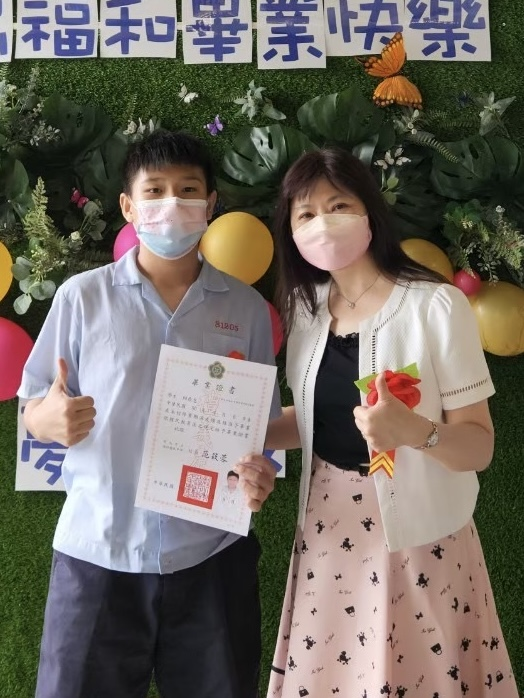
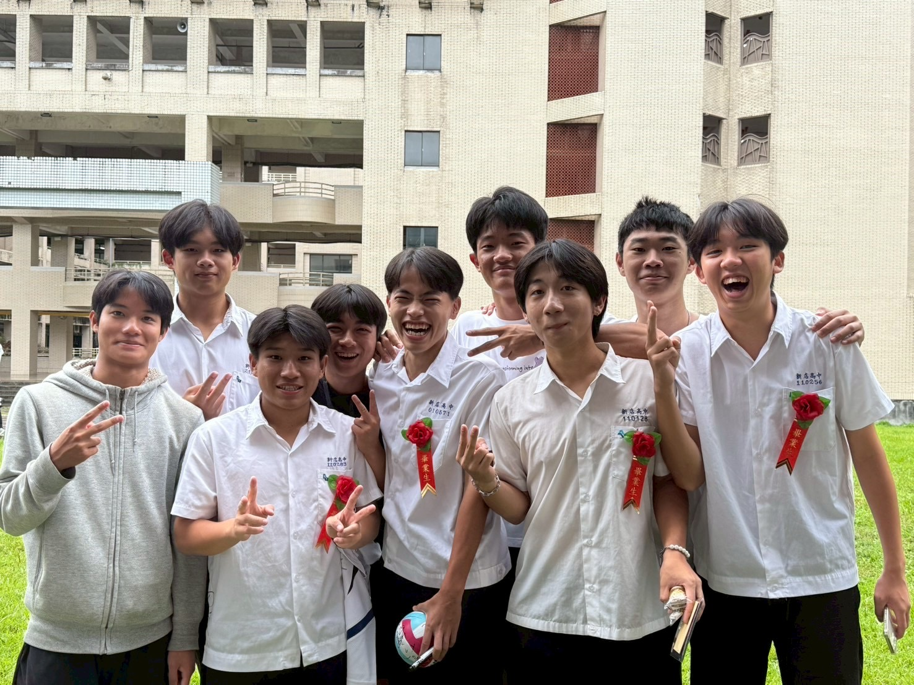
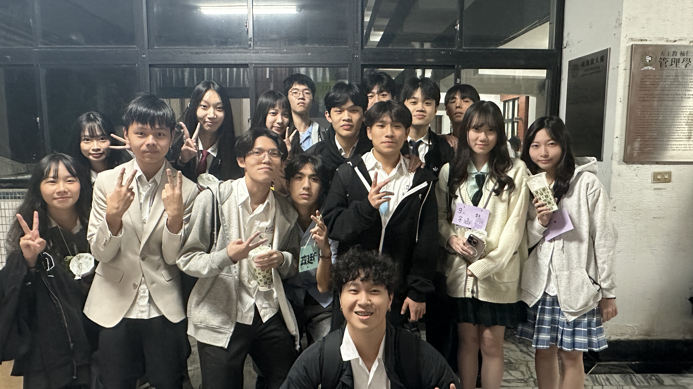
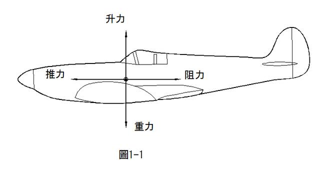
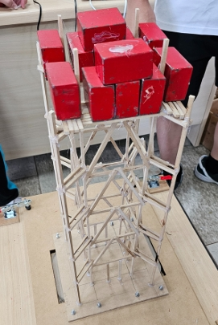
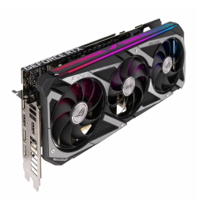

自我介紹
哈囉 ! 我是邱鼎恩，目前就讀輔仁大學，我是一個活潑開朗的人，很少有不開心的時候，我挺擅長安慰人，所以需要正能量的時候歡迎來找我喔...還有還有，我非常喜歡運動，平常會打排球、籃球還有游泳，高中有加排球隊，現在則是參加系籃，暑假的時候去考救生員也順利通過了，現在的我交了很多新的朋友，跟他們相處在一起很快樂，不管這段友誼會維持多久(我相信是永遠)，反正我很享受現在的時光 ♡
技能展示
創作能力60%
社交能力70%
溝通能力70%
學習能力80%
運動能力95%
經歷

2019 - 2022
就讀福和國中
當時對未來還沒有什麼頭緒，甚至不知道未來想讀哪間高中。

2022 - 2025
就讀新店高中（理工組）
逐漸確立方向，高二選擇理工組朝資訊發展，也交了很多好朋友。

2025 - 現在
輔仁大學
學測考上輔仁大學，目前課業壓力尚輕，與朋友們相處充滿歡笑。
畢業後暑假
工作經驗
畢業後暑假期間從事短期打工：6月在早餐店、7月在便當店；8月起至今於補習班擔任輔導老師，後來也擔任部分行政工作。雖然薪水不多，但累積了經驗並賺到一些收入。
專案作品集

紙飛機的藝術與科學
心得：實驗讓我發現許多科學原理與細節的重要性，透過不斷觀察與調整，體會到科學精神與創意結合的樂趣與可能性。

木棒抗震塔的設計與研究
心得：我們的塔能支撐接近六到七級的震度，比預期堅固，學到耐震結構與團隊分工的重要性。

顯卡對遊戲體驗的重要性
心得：對電腦硬體有更深入的認識，了解顯卡的重要性已超越遊戲領域，並啟發未來學習硬體相關知識的興趣。
聯絡方式
Email: glaciernnn@gmail.com
GitHub: github.com/CHIUDINGEN